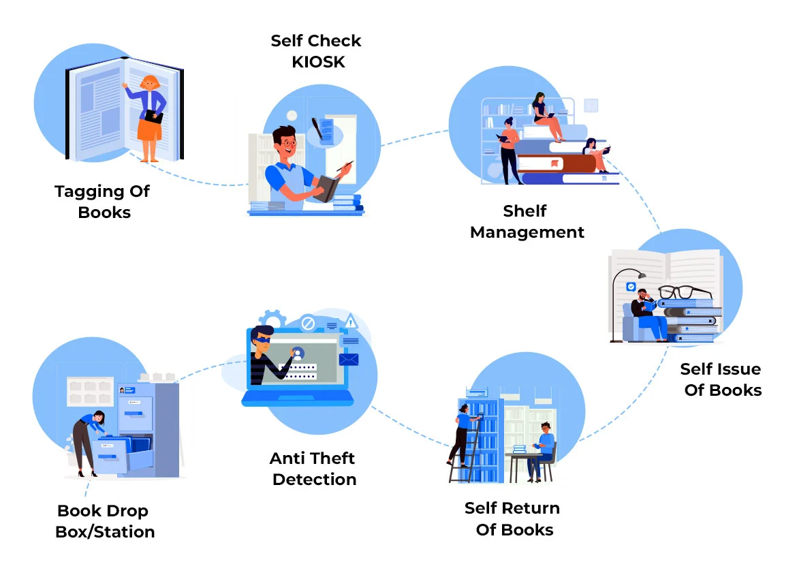

Welcome to Our Library
Effectively Manage, Track, and Perform Daily Library Operations with Ease!
 Librio
LibrioEffectively Manage, Track, and Perform Daily Library Operations with Ease!


The Shelf Management System consists of Mobile RFID Reader integrated with library software. This facilitates almost instant searching of the desired book in library & library book verification (Stock verification) can be done without a line-of-sight. The long read range of 3 meters makes stock verification & book searching an easy task.
chevron_right
For Stock Verification: You need to press the scan button of the reader & move it across the shelves. The reader gathers all the unique accession numbers of books in the physical range of 1 meter. The collected accession numbers are transferred to the RF LIB-man library automation software & a stock verification report is generated. It verifies 1, 00,000 books per day.
chevron_right
For Searching a Book: You need to enter an accession number to search in reader & sweep across shelves for searching. When a book is near-by the reader, a built-in beeper sounds to alert the librarians.
RFID Tag is pasted into the inner side of a front cover page of the book & a full-page sticker is attached to it for hiding it from the patron. Also, tagging is done using RFID Reader. Tagging implies writing RFID tag EPC code to library management system software and writing accession numbers to tag memory. This makes the book ready for all RFID operations. To use this service patrons get UHF-RFID ID cards.
The integrated library automation software offers the facility of self-automated issue-return (Check-in/out) of books to patrons.
chevron_right
Patron shows his/her RFID card to the reader in Kiosk for automatic login.
chevron_right
After that, he/she puts books to be issued on RFID Reader to avail it.
The RFID Anti Theft Portals (security system) are placed at the exit gate of the library & portal tracks books up to 3 meters range and would trigger the alarm with red flashlights when a patron passes through a gate with an unissued book. It can detect multiple items at a time. This is the most accurate security system for libraries with minimum chances of false alarm.
chevron_right
For Self-return of books: Patron just needs to keep the books on - Reader of Kiosk & the books are returned cancelling the patron loan.
chevron_right
During the book issue or return process, a receipt is printed and SMS is sent to Patron.